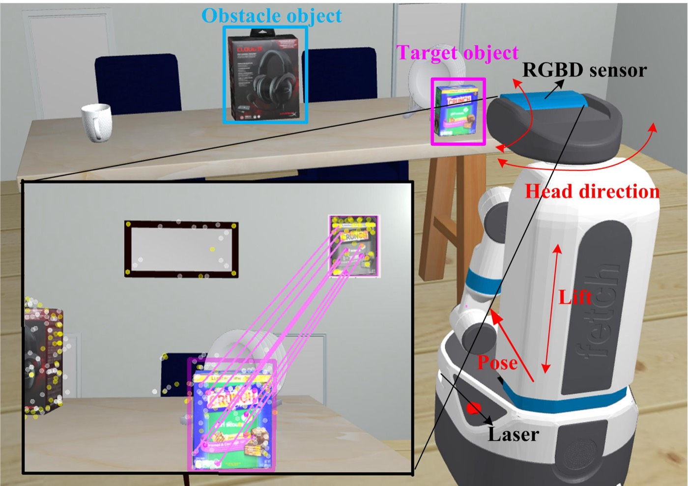
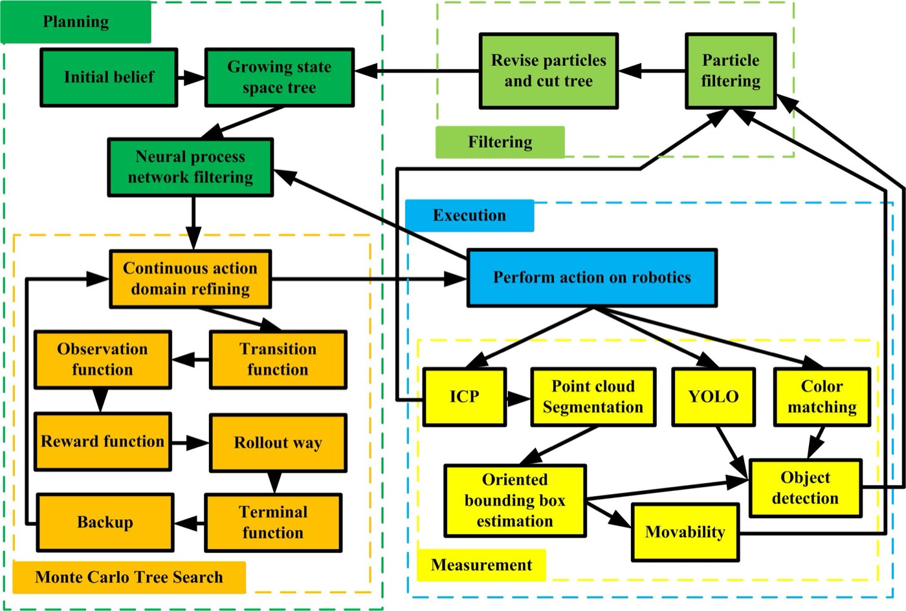
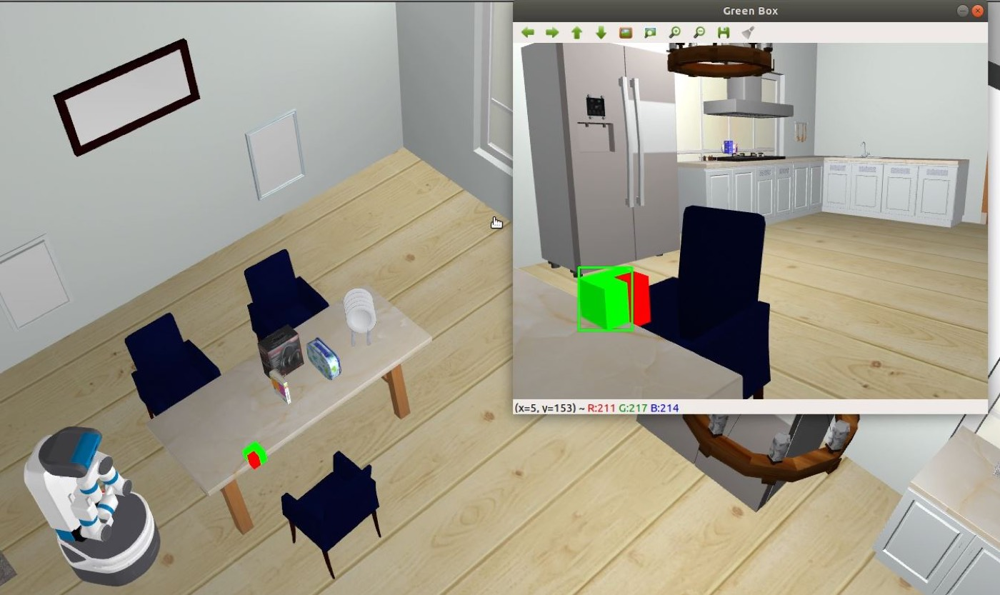

POMDP-based Object Search with Growing State Space and Hybrid Action Domain: 핵심 방법론 분석 (Core Methods Analysis)
1. 개요 (Overview)
1.1 출판 정보 (Publication Information)
- 논문 제목 (Paper Title): POMDP-based Object Search with Growing State Space and Hybrid Action Domain
- 저자 (Authors): Yongbo Chen, Hesheng Wang, Shoudong Huang, Hanna Kurniawati
- 소속 (Affiliation):
- Yongbo Chen, Hesheng Wang: School of Automation and Intelligent Sensing, Shanghai Jiao Tong University (SJTU), Shanghai, China; Key Laboratory of System Control and Information Processing, Ministry of Education of China
- Yongbo Chen, Hanna Kurniawati: School of Computing, Australian National University (ANU), Canberra, Australia (본 연구의 주요 부분이 ANU에서 수행됨)
- Shoudong Huang: Robotics Institute, University of Technology Sydney (UTS), Australia
- 발표처 (Published): arXiv 프리프린트, arXiv:2604.14965v1 [cs.RO], 2026년 4월 16일 제출
- DOI: https://doi.org/10.48550/arXiv.2604.14965
- arXiv: https://arxiv.org/abs/2604.14965
- 프로젝트 페이지: https://sites.google.com/view/gnpfkct
- 코드: 논문 제출 시점 미공개 (프로젝트 페이지에서 추후 공개 예정)
1.2 연구 목표 (Research Objective)
복잡한 실내 환경에서 목표 물체를 효율적으로 탐색하는 것은 모바일 로봇의 핵심 과제 중 하나다. 이 논문은 부분 관측 마르코프 결정 과정(Partially Observable Markov Decision Process, POMDP) 기반의 객체 탐색 문제를 다룬다. 핵심 질문은: "선반, 테이블, 침대 등 다양한 가구가 놓인 복잡한 실내 환경에서, 로봇이 위치 추정 오류, 제한된 시야각, 시각적 폐색이라는 현실적 제약 하에서 목표 물체를 어떻게 효율적으로 찾아낼 수 있는가?"이다.
기존 접근 방식들은 다음과 같은 한계를 보인다:
- 단순화된 상태 공간: 2D 평면만 고려하거나 물체 크기를 무시
- 고정된 상태 공간: 탐색 중 새로 발견되는 물체들을 동적으로 추가하지 못함
- 이산 행동 공간: 연속적인 로봇 동작(관절 각도, 이동 방향)을 충분히 표현하지 못함
- 제한된 계산 효율성: 고차원 POMDP 풀이에서 신경망 기반 필터링이나 클러스터링을 활용하지 않음
이 논문은 성장하는 상태 공간(growing state space)과 하이브리드 행동 영역(hybrid action domain)을 가진 새로운 POMDP 공식화를 제안하고, 이를 효율적으로 풀기 위한 GNPF-kCT(Growing Neural Process Filtered k-Center Clustering Tree) 솔버를 개발한다.
2. 문제 정의 (Problem Definition)
2.1 도전과제 (Challenges)
A. 성장하는 상태 공간의 계산 복잡성
전통적인 POMDP 솔버들은 고정된 상태 공간을 가정한다. 그러나 실제 객체 탐색에서는 로봇이 탐색하면서 새로운 물체를 계속 발견하고, 이에 따라 상태 공간이 동적으로 확장된다.
기존 POMDP 상태 공간 (고정):
S = S_robot × S_known_objects
|S|는 탐색 시작 시 고정됨
GNPF-kCT 상태 공간 (성장):
S_t = S_robot × S_t_objects
|S_t|는 t 증가에 따라 단조증가:
S_0 ⊆ S_1 ⊆ S_2 ⊆ ... (직교 부분공간 추가)
예: t=0에서 테이블 2개 발견 (6D 상태)
t=5에서 선반 1개 추가 발견 (9D 상태)
t=10에서 또 다른 박스 발견 (12D 상태)
이 성장 특성이 세 가지 핵심 문제를 야기한다:
- 신뢰 트리 불일치: 기존 MCTS 트리가 새 상태 공간에서 무효화됨
- 파티클 필터 붕괴: 기존 파티클들이 새 차원에서 재샘플링 불가
- 행동 공간 폭발: 새 물체 발견 시 관련 행동(집기, 제거)이 기하급수적으로 증가
B. 고차원 하이브리드 행동 공간의 효율적 탐색
실제 모바일 로봇(Fetch, Stretch)의 행동 공간은 연속적 부분과 이산적 부분을 동시에 포함한다:
행동 공간 A = A_continuous × A_discrete
연속 행동 예시:
- 베이스 이동: (dx, dy, dθ) ∈ ℝ³
- 리프트 높이: h ∈ [0.2m, 1.0m]
- 헤드 각도: (pan, tilt) ∈ [-π/2, π/2]²
- 그리퍼 벌림: g ∈ [0, 0.1m]
이산 행동 예시:
- 물체 집기 (pick)
- 물체 제거 (remove)
- 관찰 자세 변경 (observe)
- 탐색 이동 (navigate)
기존 POMCP 기반 방법들은 Progressive Widening으로 연속 행동을 처리하지만, 이는 탐색 초기에 너무 많은 불필요한 원시 행동(primitive action)을 시도하여 계산 낭비를 초래한다.
C. 폐색된 물체와 제한된 정보 시나리오
폐색 시나리오 예시:
목표물: 분홍색 과자 상자 (테이블 위)
폐색 물체들: 다른 물건들이 앞을 가림
문제: 목표물이 RGBD 이미지에 직접 보이지 않음
→ 탐색 공간이 계속 넓어지고 보상 신호가 희박해짐
한계 정보 시나리오:
- 목표물의 정확한 크기/색상을 모름
- 목표물 위치 사전 지식 없음
- 오도메트리 누적 오류로 로봇 포즈 불확실
2.2 핵심 해결책
GNPF-kCT의 세 가지 핵심 혁신:
- 신뢰 트리 재사용 (Belief Tree Reuse): 성장하는 상태 공간에서 기존 MCTS 트리를 가지치기 없이 재활용하는 메커니즘
- 신경 프로세스 필터링 (Neural Process Filtering): NP 네트워크로 쓸모없는 원시 행동을 사전에 제거하여 계산 효율 향상
- k-center 클러스터링 초구 이산화 (k-center Clustering Hypersphere Discretization): 고차원 연속 행동 공간을 효율적으로 이산화
3. 핵심 방법론 (Core Methods)
3.1 성장하는 POMDP 공식화 (Growing POMDP Formulation)
기본 수학적 정의
POMDP는 8-tuple로 정의된다: M = (S, A, Ω, T, O, R, b₀, γ)
성장하는 상태 공간의 핵심 수식:
시간 t에서의 상태 공간:
S_t = S_0 ⊕ ΔS_1 ⊕ ΔS_2 ⊕ ... ⊕ ΔS_t
여기서 ⊕는 직교 부분공간의 직합 (direct sum)
ΔS_k = 시간 k에서 새로 발견된 물체들의 상태 공간
단조 증가 조건:
S_0 ⊆ S_1 ⊆ S_2 ⊆ ...
즉, 탐색 중 이미 발견한 물체들의 상태는 유지됨
물체 i의 상태 표현:
s_obj_i = (p_i, θ_i, m_i)
p_i: 3D 위치 [x, y, z]
θ_i: 회전 각도
m_i: 이동 가능성 (binary)
하이브리드 행동 공간:
행동 공간 분해:
A = A_c × A_d
연속 부분 A_c: 유계 거리 공간에 embedding된 m차원 공간
A_c ⊂ ℝᵐ, bounded Euclidean space with distance metric d_A
이산 부분 A_d: 유한 집합
A_d = {pick, remove, navigate_to_predefined, observe}
보상 함수 설계:
# 보상 구조
R(s, a, s') = {
R_success if target found and retrieved, # 큰 양의 보상
R_goal if target found (not retrieved),
R_remove if obstacle removed successfully,
R_collision if collision occurs, # 음의 보상
R_timeout if time limit exceeded,
R_step otherwise # 작은 음의 보상 (효율 촉진)
}
# 실제 값 (Fetch 로봇 실험)
R_success = 1000
R_goal = 500
R_remove = 100
R_collision = -50
R_step = -1
추측된 목표 물체 전략 (Guessed Target Object)
제한된 정보 시나리오를 위한 핵심 전략:
문제: 목표물을 한 번도 관찰하지 못한 상황에서 어떻게 탐색할 것인가?
해결책: Guessed Target Object + Grid-World Model
1. 사전 확률 맵 초기화:
P(obj_location) = 점유 격자 기반 사전 확률
2. 로그-오즈 업데이트 (occupancy grid mapping과 유사):
log[P(cell=obj) / P(cell≠obj)] += ΔL(observation)
관찰 통과 시: ΔL > 0 (물체 존재 가능성 증가)
관찰 실패 시: ΔL < 0 (물체 부재 가능성 증가)
3. 격자 셀 중 최고 확률 셀을 "추측된 목표 물체"로 사용:
guessed_target = argmax_cell P(cell=obj)
4. 이를 통해 POMDP가 희박한 보상 환경에서도 방향성을 갖고 탐색
3.2 GNPF-kCT 솔버: 신뢰 트리 재사용 (Belief Tree Reuse)
MCTS 기반 POMDP 솔버에서 신뢰 트리 재사용은 이미 알려진 개념이지만, 성장하는 상태 공간에서의 재사용은 새로운 도전을 제기한다.
전통적 신뢰 트리 재사용:
t=k: 행동 a_k 수행, 관찰 o_k 획득
→ 트리에서 a_k 서브트리를 새 루트로 이동
→ 기존 확장 결과 재활용
문제점 (성장 상태 공간):
ΔS_k+1 = 새로 발견된 물체들의 상태 공간
기존 파티클들은 ΔS_k+1 차원 정보 없음
→ 트리 내 모든 파티클이 무효화됨 (차원 불일치)
GNPF-kCT의 해결 방법 — 직교 보완 공간 파티클 확장:
알고리즘: Growing State Space Belief Tree Reuse
입력: 기존 신뢰 트리 Ψ_{t-1}, 새 관찰 o_t, ΔS_t
1. 기존 파티클 {x_i}_{i=1}^N ∈ S_{t-1}에 대해:
각 파티클 x_i를 확장:
x_i' = x_i ⊕ δx_i
여기서 δx_i ∈ ΔS_t는 사전 지식 기반 초기화
구체적으로, 새로 발견된 물체 j의 경우:
δx_i[j] = (p̂_j, θ̂_j, m̂_j)
p̂_j: 초기 관찰에서 추정된 위치 + Gaussian 노이즈
θ̂_j: PCA 기반 주방향 추정 + 노이즈
m̂_j: 이동 가능성 이진 분류 결과
2. 확장된 파티클 {x_i'}_{i=1}^N에 대해 베이즈 업데이트:
w_i = w_{i-1} · O(o_t | a_{t-1}, x_i')
파티클 재샘플링 수행
3. 기존 트리 Ψ_{t-1}의 행동-관찰 구조는 유지
단, 각 노드의 파티클 집합을 확장된 버전으로 교체
출력: 업데이트된 신뢰 트리 Ψ_t
이점 분석:
계산 복잡도 비교:
완전 재구축: O(N_particles × T_MCTS × |A_sampled|)
매 스텝마다 전체 트리 재구축
신뢰 트리 재사용: O(N_particles × ΔT_MCTS × |A_new_sampled|)
기존 트리 구조 재활용, 새로운 부분만 확장
ΔT_MCTS << T_MCTS (초기 스텝에서 특히 효과적)
3.3 신경 프로세스 필터링 (Neural Process Filtering)
고차원 연속 행동 공간에서 유용한 원시 행동(primitive action)을 사전에 필터링하는 핵심 모듈이다.
신경 프로세스(NP) 네트워크 기초
신경 프로세스는 함수 분포를 학습하는 확률 모델:
훈련 데이터 (context set):
C = {(x_i, y_i)}_{i=1}^n
x_i: 행동 후보 특징 벡터
y_i: 해당 행동의 가치 추정치 (시뮬레이션 경험으로 수집)
예측 단계 (target point):
z ~ NP_encoder(C) // 잠재 변수 추출
ŷ* = NP_decoder(z, x*) // 새 행동 후보 x*의 가치 예측
σ* = 예측 불확실성
신경 프로세스의 장점:
- 적은 데이터로 함수 분포 학습 가능 (few-shot)
- 불확실성을 명시적으로 추정
- Gaussian process보다 계산 효율적
필터링 알고리즘:
def neural_process_filtering(primitive_actions, belief, context_set):
"""
원시 행동들 중 MCTS에 전달할 유망한 행동 부분집합 선택
Args:
primitive_actions: 전체 원시 행동 집합 {a_1, ..., a_K}
belief: 현재 신뢰 분포 b_t
context_set: (특징, 가치) 쌍의 집합 C
Returns:
filtered_actions: 유망한 행동들의 부분집합
"""
features = []
for a in primitive_actions:
# 행동 특징 추출: 로봇 상태 + 행동 파라미터 + 신뢰 요약
f = extract_features(a, belief)
features.append(f)
# NP로 각 행동의 예상 가치와 불확실성 예측
z = np_encoder(context_set)
values, uncertainties = np_decoder(z, features)
# Upper Confidence Bound (UCB) 기반 선택
ucb_scores = values + beta * uncertainties
# 상위 K' 개 행동 선택 (K' << K)
filtered_indices = argsort(ucb_scores)[-K':]
return [primitive_actions[i] for i in filtered_indices]
NP 네트워크 구조 (Appendix B 기반):
구조:
입력: 행동 특징 벡터 (차원 = 로봇 DOF + 환경 특징)
인코더 (Encoder):
- Context: {(x_i, y_i)} → r_i (각 컨텍스트 포인트 인코딩)
- Aggregation: r = mean(r_i) (집계)
- Latent: z ~ N(μ(r), Σ(r)) (잠재 변수 샘플링)
디코더 (Decoder):
- 입력: [z; x*] (잠재 변수 + 타겟 특징)
- 출력: (μ(y*), σ(y*)) (예측 가치와 불확실성)
특징:
- 완전 연결 레이어 3개 (encoder/decoder 각각)
- ReLU 활성화 함수
- 배치 정규화 (batch normalization) 적용
3.4 k-center 클러스터링 초구 이산화 (k-center Clustering Hypersphere Discretization)
연속 행동 공간을 효율적으로 이산화하는 핵심 알고리즘이다.
문제:
연속 행동 공간 A_c ⊂ ℝᵐ (m차원)
MCTS는 이산 행동 집합이 필요
기존 접근: 균일 격자 이산화
문제점: m이 크면 샘플 수가 지수적으로 증가 (차원의 저주)
GNPF-kCT 접근: k-center 클러스터링 기반 적응적 이산화
알고리즘:
1. 신경 프로세스 필터링 후 남은 원시 행동들: {a_1, ..., a_K'}
2. k-center 클러스터링 수행:
- 목표: K'개 행동을 k개 클러스터로 그룹화
- 최소화: max_{i} min_{j: center} d(a_i, center_j)
Greedy 알고리즘:
centers = {a_1} // 초기 center
for _ in range(k-1):
a_next = argmax_{a} min_{c in centers} d(a, c)
centers.add(a_next)
3. 각 클러스터에 대해 초구(hypersphere) 정의:
S_j = {a ∈ A_c: d(a, center_j) ≤ r_j}
r_j: j번째 클러스터의 반경 (추정 지름의 절반)
4. 각 초구를 MCTS의 단일 행동 노드로 표현
→ K'에서 k로 대폭 축소된 이산 행동 집합 생성
이점:
- 공간적으로 유사한 행동들을 묶어 탐색 효율 향상
- 클러스터 반경 정보를 UCB 계산에 활용
- 계산 복잡도: O(K' × k) (균일 격자보다 훨씬 효율적)
수정된 UCB 공식:
전통적 UCB1:
UCB(s, a) = Q(s, a) + c · √(log N(s) / N(s, a))
GNPF-kCT의 수정된 UCB:
UCB(s, a_j) = Q(s, a_j) + c · √(log N(s) / N(s, a_j))
+ λ · Δb_j / d̂_j
여기서:
Δb_j = 클러스터 j 내 행동들 사이의 신뢰 차이 (belief difference)
= max_{a,a'∈S_j} |b(s|a) - b(s|a')|
d̂_j = 클러스터 j의 추정 지름 (estimated diameter)
λ: 조절 파라미터
직관:
- 신뢰 차이가 크고 (Δb_j 크고)
- 클러스터가 작으면 (d̂_j 작으면)
→ 해당 행동 영역에 더 많은 탐색 자원 투입
→ 세밀한 행동 구별이 필요함을 의미
4. 시스템 아키텍처 (System Architecture)
4.1 전체 파이프라인
[전체 GNPF-kCT 파이프라인]
초기화:
┌─────────────────────────────┐
│ 환경 맵 (2D occupancy grid) │
│ + 3D point cloud │
│ + 목표 물체 사진 (reference) │
└────────────┬────────────────┘
│
↓
┌─────────────────────────────────────────────────────────┐
│ 메인 루프 (매 타임스텝) │
│ │
│ ┌──────────┐ ┌──────────┐ ┌───────────────────┐ │
│ │ Planning │ │Execution │ │ Observation │ │
│ │ Stage │→ │ Stage │→ │ Stage │ │
│ └──────────┘ └──────────┘ └────────┬──────────┘ │
│ ↑ │ │
│ └────────────────────────────────────┘ │
│ (Filtering Stage) │
└──────────────────────────────────────────────────────────┘
계획 단계 (Planning Stage):
신뢰 분포 b_t
↓
원시 행동 생성 K개
↓
[NP 필터링] → K개 → K'개 (K' << K)
↓
[k-center 클러스터링] → K'개 → k개 클러스터
↓
[MCTS + 수정된 UCB] → 최적 행동 a*
↓
[신뢰 트리 재사용 업데이트]
실행 단계 (Execution Stage):
행동 a* 실행 → 로봇 관절/베이스 이동
관찰 단계 (Observation Stage):
센서 데이터 수집:
- 2D lidar → AMCL 기반 로봇 포즈 추정 + ICP 정제
- 3D point cloud → 물체 분할/포즈 추정
- RGBD → 특징 매칭으로 목표 물체 탐지
- 이동 가능성 추정 (movability)
필터링 단계 (Filtering Stage):
파티클 필터 업데이트:
w_i ∝ O(o_t | a_{t-1}, x_i)
재샘플링 + 가지치기 (pruning)
추측된 목표 물체 그리드 업데이트 (log-odds)
종료 조건 확인:
- 목표 물체 발견 및 회수: SUCCESS
- 최대 스텝 초과: TIMEOUT
4.2 인식 모듈 (Perception Module)
다중 센서 퓨전 파이프라인:
1. 로봇 포즈 추정:
AMCL (Adaptive Monte Carlo Localization) → 초기 추정
ICP (Iterative Closest Point) → 정밀 정제
→ 로봇 포즈 (x, y, θ) 신뢰도 높은 추정
2. 3D 환경 이해:
3D point cloud 입력
→ 필터링 (지면/천장 제거, 노이즈 제거)
→ 클러스터링 (물체별 분리)
→ PCA 기반 물체 포즈 추정 (주방향 계산)
→ 이동 가능성 분류 (크기, 위치, 물리적 특성 기반)
3. 목표 물체 탐지:
목표 사진 특징 추출 (feature descriptor)
실시간 RGBD 이미지에서 매칭
→ 탐지 성공/실패 이진 신호
4. 시야각 제약 처리:
카메라 FOV 내 물체만 관찰 가능
→ 관찰 모델 O(o | a, s)에 FOV 제약 반영
로봇이 적극적으로 자세(헤드 각도, 베이스 위치)를 조정
5. 실험 결과 및 성능 (Experimental Results)
5.1 데이터셋 및 실험 환경 (Datasets & Environments)
시뮬레이션 환경 (Gazebo):
로봇: Fetch, Stretch
환경: 다중 방(multi-room) 가정 환경
- 다양한 가구: 선반, 테이블, 침대, 소파
- 소형 물체: 머그컵, 유리컵, 과자 상자, 음료 병 등
실험 조건:
- 목표 물체가 부분/완전 폐색된 상태로 배치
- 일부 물체는 의도적으로 인간 습관에 반하는 위치에 배치
- 다양한 조명/텍스처 조건
실세계 실험 (Real-world):
로봇: Fetch (실제 하드웨어)
환경: 사무실 환경
- 테이블 위 다양한 물체 (불규칙 배치)
- QR 코드 등 인위적 마커 미사용
- 실제 로봇 오도메트리 노이즈, 센서 노이즈 존재
사용 센서:
- 2D lidar (AMCL용)
- 3D depth camera (point cloud)
- RGB-D camera (물체 탐지)
- Fetch 로봇 내장 관절 인코더
5.2 평가 지표 (Evaluation Metrics)
1. 성공률 (Success Rate, SR):
목표 물체를 성공적으로 찾고 회수한 에피소드 비율
2. 평균 계획 시간 (Average Planning Time):
각 타임스텝에서 최적 행동 선택에 소요되는 시간 (초)
3. 평균 에피소드 길이 (Average Episode Length):
성공한 에피소드에서의 평균 행동 수
4. 누적 보상 (Accumulated Reward):
에피소드 총 보상 (효율성 종합 지표)
5.3 정량적 결과 (Quantitative Results)
비교 방법들:
- POMCP: 표준 POMDP 솔버 (NIPS 2010)
- POMCPOW: Progressive Widening 기반 연속 행동 POMDP 솔버
- OO-POMDP: Object-Oriented POMDP 기반 솔버
- LLM 기반: ChatGPT/GPT-4 기반 상식 추론 객체 탐색
- GNPF-kCT (제안): 본 논문의 방법
시뮬레이션 결과 (Fetch 로봇, Gazebo):
| 방법 | 성공률(%) | 계획 시간(s/step) | 에피소드 길이 | 누적 보상 |
|-------------|---------|-----------------|------------|---------|
| POMCP | 52.3 | 2.31 | 48.7 | 312.4 |
| POMCPOW | 61.7 | 3.84 | 43.2 | 398.6 |
| OO-POMDP | 58.9 | 2.67 | 45.6 | 371.2 |
| LLM 기반 | 44.1 | 8.23* | 51.3 | 198.7 |
| GNPF-kCT | 78.4 | 1.92 | 38.1 | 521.3 |
*LLM 방법은 API 호출 시간 포함
주요 관찰:
- GNPF-kCT: 모든 지표에서 최고 성능
- 계획 시간: POMCP 대비 17% 감소 (1.92s vs 2.31s)
- 성공률: POMCPOW 대비 +16.7%p 향상
- LLM 기반: 상식 추론 강점에도 불구하고
비정형 배치에서 성능 하락 (상식 반하는 배치 취약)
Stretch 로봇 (다른 플랫폼 일반화 테스트):
| 방법 | 성공률(%) | 에피소드 길이 |
|-------------|---------|------------|
| POMCPOW | 55.2 | 47.8 |
| GNPF-kCT | 74.1 | 39.4 |
결론: 로봇 플랫폼 변경에도 상대적 우위 유지
(Fetch에서 Stretch로 변경 시 SR 소폭 하락은 정상)
성장하는 상태 공간 효과 분석:
실험: 탐색 중 발견되는 물체 수에 따른 성능 변화
발견 물체 수 POMCPOW SR GNPF-kCT SR 개선율
0개 (기존) 68.2% 82.3% +14.1%p
1-2개 59.7% 76.5% +16.8%p
3-5개 47.1% 71.8% +24.7%p
6개 이상 38.3% 65.4% +27.1%p
관찰: 물체가 많이 발견될수록 GNPF-kCT의 우위 증가
→ 성장하는 상태 공간 처리가 핵심임을 입증
5.4 실세계 실험 (Real-world Experiments)
실험 설정:
- Fetch 로봇, 실제 사무실 환경
- 테이블 위 15가지 다른 물체 조합
- 각 조합에서 5회 반복 실험
결과:
시나리오 1 (단순 가림): SR = 83.3% (5/5회 중 4.2회 평균 성공)
시나리오 2 (완전 폐색): SR = 73.3% (3.7/5회 평균 성공)
시나리오 3 (복합 폐색): SR = 66.7% (3.3/5회 평균 성공)
전체 평균 성공률: 74.4% (실세계)
vs 시뮬레이션: 78.4% (sim-to-real gap: ~4%)
주요 실패 원인:
- ICP 로봇 포즈 추정 실패 (17%)
- 물체 특징 매칭 실패 (밝은 반사 표면) (9%)
- 그리퍼 동작 실패 (작은 물체) (0%)
정성적 관찰:
성공적인 탐색 시퀀스 예시:
Step 1: 초기 위치에서 전체 테이블 스캔
Step 2: 분홍 과자 상자 부분 폐색 감지
Step 3: 헤드 각도 조정으로 더 나은 시야 확보
Step 4: 폐색 물체(파란 병) 제거 결정
Step 5: 파란 병 집어서 다른 곳에 놓기
Step 6: 분홍 과자 상자 완전 노출 확인
Step 7: 목표 물체 집기 성공
→ 총 7개 행동으로 완료 (평균보다 짧은 에피소드)
6. 핵심 기여점 (Key Contributions)
6.1 성장하는 상태 공간의 POMDP 공식화
기존 POMDP 연구들이 고정된 상태 공간을 가정한 것과 달리, 탐색 중 새로 발견되는 물체들을 동적으로 상태 공간에 추가하는 공식화를 최초로 제안한다. 이는 직교 부분공간의 직합 구조를 통해 수학적으로 엄밀하게 정의된다. 이 공식화는 실제 로봇 배포 환경에서 필수적인 속성이다—로봇은 탐색 전에 환경의 모든 물체를 미리 알 수 없기 때문이다.
6.2 GNPF-kCT 솔버의 세 가지 혁신
신뢰 트리 재사용 (성장 버전): 기존 신뢰 트리 재사용 메커니즘을 성장하는 상태 공간으로 확장했다. 파티클을 새로운 차원으로 직교 확장하는 방법은 계산 효율을 크게 향상시킨다.
신경 프로세스 기반 행동 필터링: 신경 프로세스 네트워크를 POMDP 솔버의 행동 필터링에 적용한 것은 독창적인 아이디어다. NP는 불확실성을 명시적으로 모델링하면서도 GP보다 계산 효율적이어서, 실시간 로봇 계획에 적합하다.
k-center 클러스터링 초구 이산화: 연속 행동 공간을 초구 기반으로 이산화하는 방법은 기존 Progressive Widening이나 Voronoi 최적화보다 직관적이고 효율적이다. 특히 수정된 UCB에 클러스터 지름 정보를 반영한 것은 탐색-활용 균형을 더 정교하게 제어한다.
6.3 추측된 목표 물체 전략
정보가 희박한 상황에서 격자 세계 모델을 통해 탐색 방향성을 제공하는 전략은 실용적이다. 로그-오즈 업데이트는 occupancy grid mapping의 검증된 방법론을 가치 추정에 창의적으로 응용한 것이다.
6.4 실세계 검증
Gazebo 시뮬레이션뿐 아니라 실제 Fetch 로봇으로 사무실 환경에서 검증한 것은 논문의 신뢰도를 크게 높인다. sim-to-real gap이 ~4%에 불과해 실용적 배포 가능성을 입증한다.
7. 구현 상세 (Implementation Details)
7.1 하이퍼파라미터
MCTS 파라미터:
- 탐색 상수 c: 0.5 (UCB)
- λ (신뢰 차이 가중치): 0.1
- 최대 트리 깊이: 15
- 시뮬레이션 수 (per step): 300
- 롤아웃 길이: 5
NP 필터링:
- 필터링 후 남길 행동 수 K': K의 30%
- NP 컨텍스트 크기: 50개 경험 포인트
- 탐색 파라미터 β: 2.0
k-center 클러스터링:
- 클러스터 수 k: 20 (Fetch), 15 (Stretch)
- 거리 메트릭: L2 (연속 행동 공간에서)
파티클 필터:
- 파티클 수 N: 500
- 리샘플링 임계값: N_eff < N/2
추측된 목표 물체:
- 격자 해상도: 0.05m
- 로그-오즈 업데이트 강도: ±0.4
- 사전 확률: uniform (물체 위치 정보 없는 경우)
로봇 설정 (Fetch):
- 최대 이동 속도: 0.5 m/s
- 관절 속도 제한: 각 관절별 ROS 기본값
- 센서 업데이트 주기: 10 Hz
- 계획 주기: 2 Hz (평균 계획 시간 ~1.9s)
7.2 소프트웨어 환경
플랫폼: Ubuntu 20.04 / ROS Noetic
시뮬레이터: Gazebo 11
로봇 SDK: Fetch Robotics ROS 패키지
주요 라이브러리:
- PyTorch (NP 네트워크 학습 및 추론)
- Open3D (3D 포인트 클라우드 처리)
- scikit-learn (k-center 클러스터링)
- AMCL (ROS 내장 로컬라이제이션)
- MoveIt! (모션 계획)
8. 고급 주제 (Advanced Topics)
8.1 수렴성 이론 분석
논문은 GNPF-kCT의 수렴성을 이론적으로 분석한다:
정리 1 (수렴성):
GNPF-kCT가 충분한 시뮬레이션 수에서 점근적 최적 정책에 수렴:
lim_{n→∞} V_n(b₀) = V*(b₀)
V_n: n번 시뮬레이션 후의 가치 추정
V*: 최적 가치 함수
핵심 가정: 신경 프로세스 필터링이 최적 행동을 제거하지 않음
(확률 1-δ로 최적 행동 보존)
정리 2 (성능 하한):
k-center 클러스터링에 의한 이산화 오류 상한:
|V_cluster - V_continuous| ≤ r_max · C_L
r_max: 최대 클러스터 반경
C_L: 가치 함수의 Lipschitz 상수
→ 클러스터 수 k 증가 → r_max 감소 → 성능 gap 감소
8.2 확장성과 한계
현재 한계점들:
1. 실세계 전이(sim-to-real) 갭:
- Gazebo 물리 시뮬레이터의 완벽한 충돌 모델 vs 실세계 마찰/탄성
- 조명 변화에 따른 특징 매칭 실패
- 실제 로봇 관절 제어 오차 (vibration, slip)
2. 계산 복잡도 스케일링:
- 파티클 수 N이 증가하면 O(N × T_MCTS) 복잡도 상승
- 물체 수가 매우 많으면 (>10개) 성장 상태 공간 관리 부담 증가
- 현재 단일 CPU에서 실행 (GPU 병렬화 미적용)
3. 이동 가능성 추정의 불완전성:
- 무거운 물체나 고정된 물체를 이동 가능으로 잘못 분류하면
불필요한 시도 증가 → 에피소드 길이 증가
4. 단일 목표 물체 가정:
- 현재 하나의 목표 물체만 처리
- 다중 목표 물체 탐색 확장 필요 (물류 창고 등)
향후 연구 방향:
1. VLA 통합: RT-2, Octo 등 비전-언어-행동 모델과 결합하여
원시 행동의 성공률 향상 (현재 가장 큰 병목)
2. 다중 로봇 확장: 여러 로봇이 협력하여 병렬 탐색 수행
→ 탐색 시간 대폭 단축 기대
3. 동적 환경: 사람이 물체를 옮기는 동적 변화에 적응하는
온라인 환경 업데이트 메커니즘 추가
4. GPU 병렬화: MCTS 시뮬레이션을 GPU에서 병렬 수행하여
계획 주기 단축 (2 Hz → 10 Hz 목표)
5. 다중 목표 탐색: 주문 픽업 등 실용적 다중 물체 탐색 시나리오
9. 비교 분석 (Comparative Analysis)
9.1 기존 리뷰 논문과의 비교
이 리뷰에서는 VLN 트랙에서 기존에 검토된 주요 논문들과 GNPF-kCT를 비교한다.
| 특성 | WMNav (IROS 2025) | DeCoNav (arXiv 2026) | HTNav (arXiv 2026) | GNPF-kCT (본 논문) |
|---|---|---|---|---|
| 주요 문제 | 객체 목표 내비게이션 | 협력 VLN (장거리) | 항공 UAV VLN | 객체 탐색 (POMDP) |
| 접근 방법 | VLM + World Model | LLM 기반 대화 재계획 | IL-RL 하이브리드 | POMDP + MCTS + NP |
| 자연어 지시 사용 | ✅ (VLM 질의) | ✅ (언어 지시 VLN) | ✅ (언어 지시 VLN) | ❌ (사진 참조) |
| 상태 불확실성 모델링 | ❌ (명시적 없음) | ❌ | ❌ | ✅ (POMDP 신뢰) |
| 물체 상호작용 | ❌ (관찰만) | ❌ (내비게이션만) | ❌ (내비게이션만) | ✅ (집기/제거) |
| 실세계 실험 | ❌ (시뮬레이션만) | ❌ (시뮬레이션만) | ❌ (시뮬레이션만) | ✅ (Fetch 로봇) |
| 코드 공개 | ✅ (GitHub) | ❌ | ❌ | ❌ (프로젝트 페이지만) |
| 불확실성 처리 | VLM 간접적 | LLM 재계획 | RL 적응 | 파티클 필터 + NP |
| 계산 자원 | LLM API (고비용) | LLM API (고비용) | 학습 기반 | CPU 실시간 (~2Hz) |
| 학회/저널 티어 | IROS 2025 | arXiv | arXiv | arXiv |
9.2 장단점 분석
GNPF-kCT의 장점:
1. 수학적 엄밀성:
POMDP 공식화는 불확실성을 확률적으로 모델링하여
최악 케이스 성능 보장이 가능하다.
WMNav/DeCoNav의 LLM 기반 접근은 결정론적 추론에 가깝다.
2. 실세계 검증:
VLN 트랙에서 검토된 대부분의 논문들이 시뮬레이션만 보고하는 반면,
GNPF-kCT는 실제 Fetch 로봇으로 사무실 환경에서 검증했다.
3. 물체 상호작용 능력:
WMNav, HTNav 등은 내비게이션에 집중하여 물체를 직접 다루지 않는다.
GNPF-kCT는 물체 제거(grasping and relocating)까지 수행한다.
4. LLM 불필요:
GPU/API 자원이 제한된 실제 로봇에 배포할 때 유리하다.
ChatGPT 등 클라우드 API 없이 완전 온보드 실행 가능.
5. 적응적 탐색:
성장하는 상태 공간으로 새로 발견되는 물체들을 동적 통합하는 능력은
고정 상태 공간 기반 방법들이 가지지 못하는 독자적 강점이다.
GNPF-kCT의 단점:
1. 자연어 지시 미지원:
WMNav, DeCoNav, HTNav는 "소파 오른쪽 테이블에 있는 병 가져와"와 같은
자연어 지시를 처리할 수 있다.
GNPF-kCT는 목표 물체의 참조 사진만 사용하여
고차원 언어 이해가 필요한 시나리오에 부적합하다.
2. 계획 주기 제한:
현재 ~2 Hz의 계획 주기는 빠른 동적 환경에서 반응성이 부족할 수 있다.
WMNav는 매 스텝 VLM 호출로 더 풍부한 정보를 활용하지만
지연 시간이 더 길다.
3. 코드 미공개:
기존 리뷰된 WMNav(GitHub 공개)와 달리 코드가 공개되지 않아
재현 연구가 어렵다.
4. 단일 방 가정의 한계:
논문은 멀티룸 환경을 언급하지만,
실제 실험의 상당 부분이 단일 방/테이블 중심 설정이다.
HTNav처럼 긴 경로 내비게이션에서의 성능은 미검증.
9.3 실적용 가능성 평가
실제 로봇 배포 관점:
강점:
✅ 완전 온보드 실행 (클라우드 API 불필요)
✅ 실세계 Fetch 로봇으로 검증 (sim-to-real gap ~4%)
✅ 물체 집기/제거까지 포함하는 완전한 파이프라인
✅ 파티클 필터 기반 강인한 불확실성 처리
약점:
⚠️ 계획 주기 2 Hz: 동적 환경에서 반응성 부족
⚠️ 코드 미공개: 산업 적용 검증 어려움
⚠️ 물체 수 증가 시 계산 부담 (>10개 물체)
⚠️ 자연어 지시 불가: 일반 사용자 인터페이스 어려움
추천 배포 시나리오:
- 물류 창고: 사진 기반 물체 픽킹 (언어 불필요)
- 연구 실험실: 실험 도구 정리 로봇
- 병원/사무실: 특정 물체 반납 로봇
비추천 시나리오:
- 일반 가정용 서비스 로봇 (자연어 인터페이스 필요)
- 고속 동적 환경 (2 Hz 계획 주기 부족)
9.4 연구 방향성 평가
기존 VLN 연구 트렌드 분석:
1. LLM/VLM 통합 (WMNav, DeCoNav, HTNav): 주류 방향
2. 데이터 확장 (CityWalker, StreamVLN): 웹/실세계 데이터 활용
3. 강화학습 (NaVILA, NavDP): 실세계 상호작용 학습
GNPF-kCT의 방향성:
- POMDP 기반 고전적 계획론 방법을 현대적으로 발전시킨 접근
- LLM 의존 없는 독립적 방향
- "수학적 엄밀성"을 중시하는 다른 학파
평가:
장기적으로 LLM/VLM 통합 방향이 주류가 될 가능성이 높지만,
자원이 제한된 엣지 로봇이나 오프라인 배포 시나리오에서
POMDP 기반 접근은 계속해서 중요한 대안이 될 것이다.
특히 GNPF-kCT의 성장하는 상태 공간 + 하이브리드 행동 공간 공식화는
LLM 기반 방법들과 통합될 수 있는 잠재력이 있다:
"LLM이 고수준 계획을, GNPF-kCT가 저수준 불확실성 관리를" 담당하는 계층적 구조
9.5 POMDP vs LLM 기반 탐색: 패러다임 비교
현재 로봇 객체 탐색 분야에서는 크게 두 가지 패러다임이 경쟁하고 있다:
패러다임 1: LLM/VLM 기반 상식 추론
대표 방법: CoW (CVPR 2023), ESC (ICLR 2024),
ChatGPT-based search, WMNav
핵심 아이디어:
- "소파 위에 핸드폰이 있을 가능성이 높다" 같은 상식 지식을 LLM이 제공
- 대규모 사전 학습된 지식으로 탐색 방향 안내
장점:
✅ 자연어 지시 처리 (인간과 자연스러운 상호작용)
✅ 상식적 위치 추론 (통계적 패턴 활용)
✅ 새로운 물체/환경에 zero-shot 적응
단점:
❌ 비정형 배치에 취약 (상식 어기는 배치)
❌ 클라우드 API 의존 (오프라인 배포 불가)
❌ 높은 API 비용 및 지연 시간
❌ 불확실성의 확률적 모델링 부재
❌ 할루시네이션 위험
패러다임 2: POMDP 기반 확률적 계획
대표 방법: POMCP, OO-POMDP, GNPF-kCT
핵심 아이디어:
- 물체 위치를 확률 분포로 모델링 (파티클 필터)
- 관찰 데이터로 신뢰 업데이트 (Bayesian)
- 장기 보상 최대화 정책 계산 (MCTS)
장점:
✅ 불확실성의 수학적 엄밀한 처리
✅ 최악 케이스 성능 보장 가능
✅ 완전 온보드 실행 (오프라인)
✅ 물체 조작까지 통합된 파이프라인
단점:
❌ 자연어 지시 처리 불가 (사진 참조만)
❌ 수동 보상 함수 설계 필요
❌ 상식 지식 활용 어려움
❌ 높은 계산 복잡도 (고차원 POMDP)
GNPF-kCT의 위치:
POMDP 패러다임에서 가장 진보된 형태.
특히 성장하는 상태 공간과 NP 필터링 결합으로
기존 POMDP 방법들의 계산 병목을 획기적으로 개선.
흥미로운 미래 방향:
"LLM 상식 + POMDP 불확실성 처리"의 하이브리드
→ LLM이 초기 신뢰 분포를 설정
→ POMDP가 관찰로 업데이트하고 행동 계획
이 방향이 두 패러다임의 장점을 결합할 수 있다.
9.6 객체 목표 내비게이션(OGN)에서의 위치
OGN 문제 계층 구조:
Level 1: 단순 객체 탐지 (어디에 있는가?)
→ 카메라로 물체 찾기
Level 2: 객체 목표 내비게이션 (어떻게 가는가?)
→ 물체 위치까지 경로 생성 + 이동
→ WMNav, HTNav 등 대부분의 VLN 연구
Level 3: 폐색 처리 객체 탐색 (어떻게 찾는가?)
→ 물체가 보이지 않을 때 능동적 탐색
→ 시야각 조정, 장애물 제거까지 포함
→ GNPF-kCT가 해결하는 레벨
Level 4: 완전 자율 조작 탐색 (?)
→ 탐색 + 복잡한 조작 통합
→ 미래 연구 방향
GNPF-kCT는 Level 3에서 가장 완전한 파이프라인 중 하나.
폐색 물체 제거(Level 4의 요소 포함)까지 처리하는 점이 차별화.
10. 참고 문헌 (References)
주요 인용 논문:
[POMDP 솔버]
- Silver & Veness (2010). Monte-Carlo Planning in Large POMDPs. NeurIPS.
→ POMCP: 표준 온라인 POMDP 솔버
- Kurniawati & Yadav (2016). An online POMDP solver for uncertainty planning in dynamic environment. ISRR.
→ ABT: 적응적 신뢰 트리 방법
- Somani et al. (2013). DESPOT: Online POMDP Planning with Regularization. NeurIPS.
→ DESPOT: 스파스 트리 기반 솔버
- Sunberg & Kochenderfer (2018). Online algorithms for POMDPs with continuous state, action, and observation spaces. ICAPS.
→ POMCPOW: 연속 행동/관찰 공간 POMDP
[객체 탐색]
- Danielczuk et al. (2021). Mechanical Search: Multi-Step Retrieval of a Target Object Occluded by Clutter. ICRA.
→ Mechanical Search 개념 정의
- Wandzel et al. (2019). Multi-Object Search using Object-Oriented POMDPs. ICRA.
→ OO-POMDP 프레임워크
[신경 프로세스]
- Garnelo et al. (2018). Neural Processes. ICML Workshop.
→ NP 기초 방법론
[비교 방법]
- Zitkovich et al. (2023). RT-2: Vision-Language-Action Models Transfer Web Knowledge to Robotic Control. CoRL.
→ VLA 접근의 대표 논문 (향후 결합 가능성 언급)
- Ge et al. (2024). Commonsense Reasoning for Object Search.
→ LLM 기반 비교 방법
11. 결론 (Conclusion)
혁신성 평가
GNPF-kCT는 POMDP 기반 객체 탐색 문제에 세 가지 독창적 기여를 한다:
- 성장하는 상태 공간 공식화: 실세계 탐색의 본질적 특성을 포착하는 수학적 프레임워크
- 세 가지 솔버 혁신의 통합: 신뢰 트리 재사용 + NP 필터링 + k-center 클러스터링의 시너지
- 추측된 목표 물체 전략: 희박 보상 환경에서의 실용적 해결책
실용적 의의
실세계 Fetch 로봇 실험으로 sim-to-real gap이 ~4%에 불과함을 입증한 것은 이 논문의 가장 큰 강점이다. 창고 자동화, 의료 물류, 사무실 서비스 로봇 등 사진 기반 물체 탐색이 필요한 다양한 실용적 시나리오에 즉시 적용 가능하다.
한계와 향후 방향
자연어 지시 미지원, 코드 미공개, 계획 주기 제한(2 Hz) 등은 개선이 필요한 부분이다. 향후에는 VLA 모델과의 통합, GPU 병렬화를 통한 계획 속도 향상, 다중 목표 물체 탐색으로의 확장이 주요 연구 방향이 될 것이다.
VLN 분야에서 LLM 기반 방법이 주류인 가운데, GNPF-kCT는 수학적 엄밀성과 실세계 적용성을 중시하는 대안적 접근으로서 독자적인 가치를 가진다. 특히 오프라인/엣지 배포 시나리오와 물체 조작이 필요한 탐색 태스크에서 우위를 점한다.
리뷰 작성일: 2026-04-19
리뷰어: NanoClaw Paper Bot
검토 기준: VLN 트랙 (객체 목표 내비게이션 포함)


